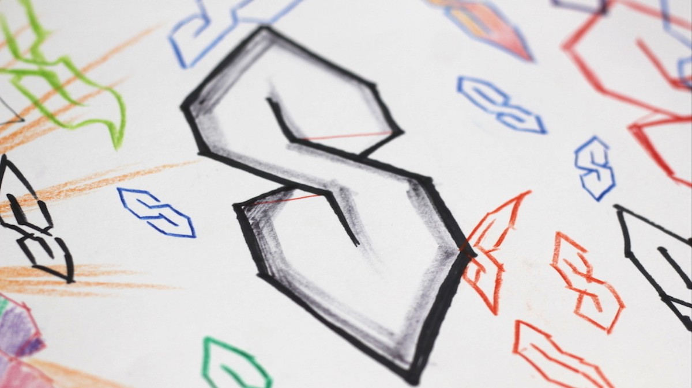

Some Cool Events:
- The Compton Gamma Ray Observatory (CGRO) launched into orbit on April 5th, 1991.
- The first free parliamentary elections were held in Taiwan.
- A total solar eclipse occured on July 11th, 1991
- Tim Berners-Lee announced the World Wide Web project on August 6th, 1991.
- The Soviet Union was dissolved. Ukraine, Belarus, Moldova, Azerbaijan, Kyrgyzstan, Uzbekistan, Armenia, Turkmenistan, Kazakhstan declared independence.
- Ötzi the Ice Man, a natural mummy was found in the Alps.
- The Galileo Spacecraft became the first probe to visit an asteroid.
Some Not-So-Cool Events:

- The Gulf War and Operation Desert Storm.
- Jeffrey Dahmer was arrested on July 22nd, 1991 after the remains of eleven bodies were found in his apartment. Cool that he was arrested; not cool about the crime.
- Freddie Mercury died on Nov. 24th, 1991.